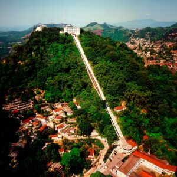

Introdução e Cultura
Santos é uma cidade litorânea do estado de São Paulo, com cerca de 430 mil habitantes, famosa por seu porto, que é um dos maiores da América Latina, e por sua infraestrutura moderna. A cidade combina desenvolvimento econômico, turismo e preservação histórica, oferecendo excelente qualidade de vida aos moradores. O planejamento urbano é eficiente, com ruas bem estruturadas, transporte público e áreas verdes que promovem lazer e sustentabilidade.

A cidade possui uma rica tradição cultural, que inclui museus, teatros, centros culturais e espaços de convivência. Eventos musicais, literários e artísticos são comuns, fortalecendo a identidade da cidade e promovendo a integração entre moradores e turistas. A arquitetura histórica se destaca, com edifícios preservados e marcos que refletem a história do porto e do desenvolvimento econômico regional.
O urbanismo inteligente integra áreas residenciais, comerciais e de lazer, com destaque para parques, jardins e a famosa orla da praia. Santos investe também em educação e inovação, possuindo instituições de ensino, centros de pesquisa e projetos tecnológicos que conectam cultura, turismo e desenvolvimento econômico, tornando a cidade um polo atraente e moderno.

Turismo, Passeios e Gastronomia
Entre os principais pontos turísticos estão a Praia do Gonzaga, o Orquidário, o Monte Serrat e o Porto de Santos. A cidade oferece passeios gratuitos em parques, praças e na orla, além de eventos culturais, feiras de artesanato e exposições de arte, promovendo lazer e entretenimento para moradores e visitantes. O turismo histórico e cultural é complementado por visitas guiadas e atividades educativas, valorizando a história do porto e da cidade.

A gastronomia santista é diversificada, incluindo frutos do mar frescos, cozinha brasileira e internacional, cafés, bares e restaurantes à beira-mar. Mercados locais e feiras de produtos regionais fortalecem a economia e permitem experiências autênticas aos turistas. Além disso, eventos gastronômicos e culturais promovem integração social, lazer e valorização da culinária local.
O turismo gastronômico se integra à experiência cultural da cidade, oferecendo experiências memoráveis e destacando Santos como um destino que combina tradição, modernidade e qualidade de vida à beira-mar.
![Uma vista aérea panorâmica da Praia do Gonzaga em Santos, mostrando uma longa extensão da praia e da orla. A areia está lotada de banhistas, guarda-sóis coloridos e tendas. A praia é banhada por um mar azul-claro com pequenas ondas. A orla tem um extenso e bem cuidado jardim com palmeiras e outras árvores. Uma avenida movimentada com carros flui paralelamente à praia. Ao longo da avenida, uma densa fileira de edifícios altos e modernos se estende até o horizonte. O dia está ensolarado e a imagem é brilhante e colorida.](../img/santos/praia_do_gonzaga.jpg "Praia do Gonzaga")
Economia, Inovação e Curiosidades
A economia de Santos é fortemente baseada no porto, comércio, turismo e serviços, consolidando a cidade como polo estratégico do estado de São Paulo. O desenvolvimento urbano inteligente integra infraestrutura moderna, planejamento sustentável e investimento em tecnologia, atraindo empresas e fortalecendo o setor logístico, comercial e turístico.
Projetos de inovação incluem centros tecnológicos, incubadoras de empresas, políticas públicas sustentáveis e iniciativas de urbanismo inteligente. A cidade investe em mobilidade, preservação ambiental e integração entre população, empresas e governo, garantindo desenvolvimento equilibrado e qualidade de vida.
Entre as curiosidades, Santos é conhecida por abrigar a maior orla de praia urbanizada do mundo, o time de futebol Santos FC, famoso internacionalmente, e por eventos culturais que atraem visitantes de toda a região. A combinação de tradição, inovação e planejamento urbano inteligente faz de Santos uma cidade admirada e referência em qualidade de vida.
![Uma vista aérea de cima para baixo do Porto de Santos, o maior porto da América Latina. Um grande navio de carga vermelho está atracado no cais, próximo a grandes guindastes portuários que estão sendo usados para movimentar contêineres coloridos. O porto se estende por uma vasta área com fileiras de contêineres de transporte de cores variadas. No lado oposto da água, há mais terminais portuários e uma paisagem urbana. Ao fundo, as montanhas e colinas estão cobertas por vegetação densa. O céu é claro, e a água é de um tom cinza-esverdeado.](../img/santos/porto.jpg "Porto de Santos")
![Uma visão aérea do Centro Histórico de Santos. A imagem mostra a Catedral de Santos em primeiro plano, com sua cúpula verde e um alto pináculo. Ao lado da catedral, há um grande edifício amarelo e o cais, que é o Terminal de Passageiros do Porto de Santos, com seu telhado em formato arredondado. A paisagem é uma mistura de edifícios residenciais e comerciais, com o porto de Santos ao fundo, onde guindastes, navios e terminais de grãos podem ser vistos. O mar e as montanhas estão ao fundo. A paisagem urbana é cercada por árvores. O céu está ligeiramente encoberto.](../img/santos/centro.jpg "Centro urbano")
![Uma vista aérea de um longo trecho da praia de Santos, mostrando o extenso jardim da orla e a avenida. A imagem, tirada em um dia ensolarado, mostra a areia clara da praia com poucas pessoas. Ao longo da praia, há um grande jardim com grama bem cuidada, árvores e coqueiros, e caminhos pavimentados. Uma avenida movimentada com carros e um ponto de ônibus no lado esquerdo separa os jardins dos prédios. Uma densa fileira de edifícios altos se estende ao longo da orla. O céu é azul claro com algumas nuvens, e o mar, com ondas leves, se estende até o horizonte.](../img/santos/orla.png "Orla da praia")